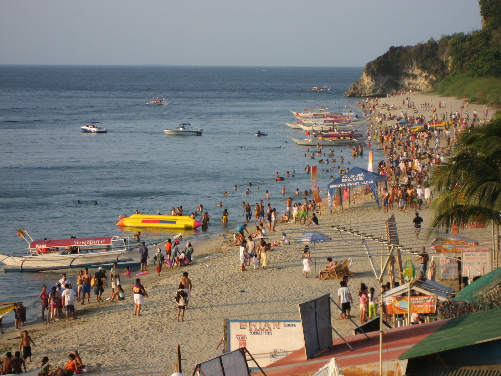
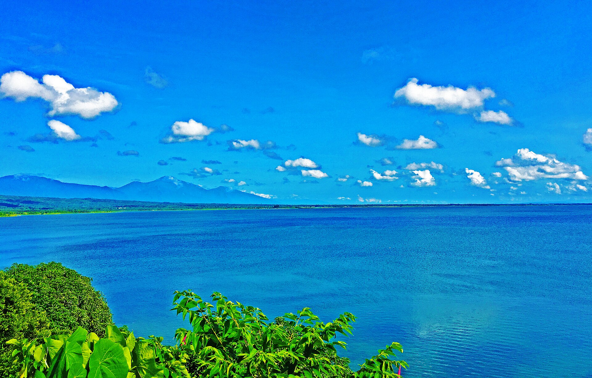
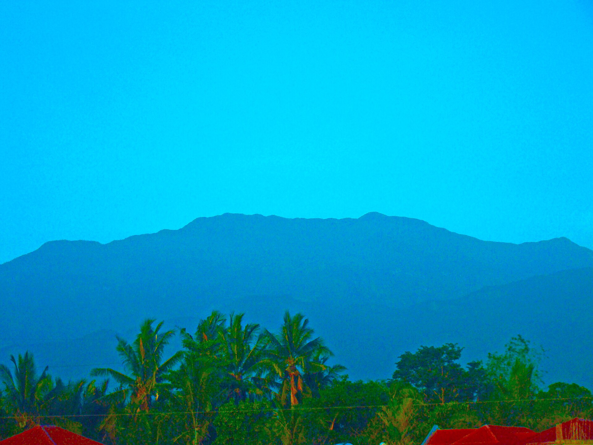

Gallery
Oriental Mindoro in pictures. Click any photo to view it larger. Full photo credits are listed on our credits page.








Honest labeling: Photos of named Mindoro locations are identified accurately. Three photos (tents and tropical sunsets) are clearly marked representative because freely licensed photographs taken inside those exact Mindoro sites were not available at the time of writing; the named-location photos are the real places.